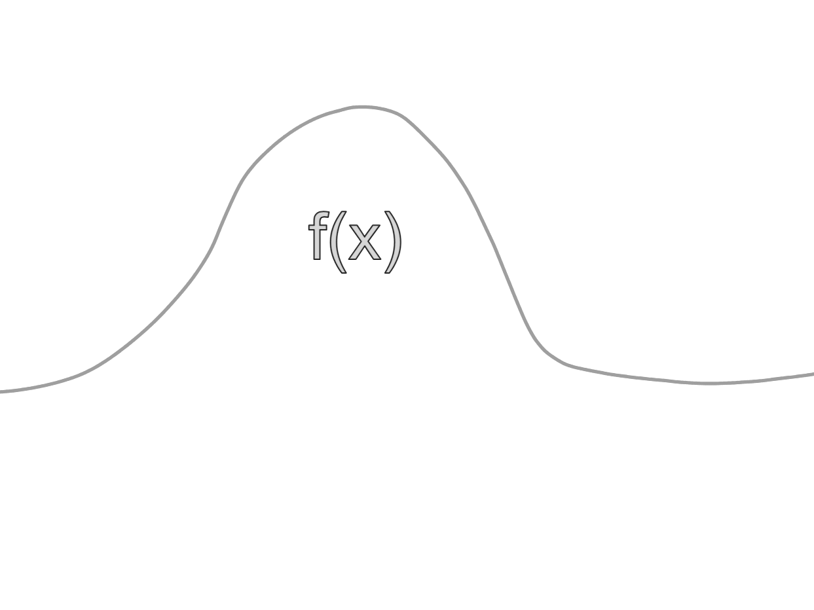

Integrals, Indefinite and Definite
Introduction
An Integral is the continuous analog of a sum, usually found to find areas, volumes and most importantly the area under a curve…

An integral can also be defined as the opposite of a derivative as getting the value of an integral is the opposite of getting the value of a derivative.
Integral Notation
Integrals are noted with the integral sign that looks like a fancy s…
∫2x6 dx
All integrals are present with the integral sign, sometimes there can be multiple…
∭2x6 dx
Indefinite Integrals
Indefinite Integrals are integrals that do not have upper and lower limits or numbers that are above and below it…
3x4 dx
Indefinite Integrals show all the antiderivatives in a function…
3x4 dx = f(x) + C
Definite Integrals
Definite Integrals are integrals that do have upper and lower limits or numbers that are above and below it…
To find a Definite Integral, first do the power rule…
Then we plug in the values…
(2)4 / 2 - (-4)4 / 2 = 16 / 2 - 256 / 2 = 8 - 128 = -120
The definite integral is -120.
Definite Integral Formula
Indefinite Integrals vs Antiderivatives
Sometimes antiderivatives and indefinite integrals can be confusing to tell apart but the main difference is the constant of integration…
Antiderivative
2x3/3 + C
Indefinite Integral
2x2 dx
Done? Here are other Links
Back to Main Page
Back to Informational
If you are seeing this, your clock is missing a ding-dong
If you are seeing this, your calender needs a pin or two.